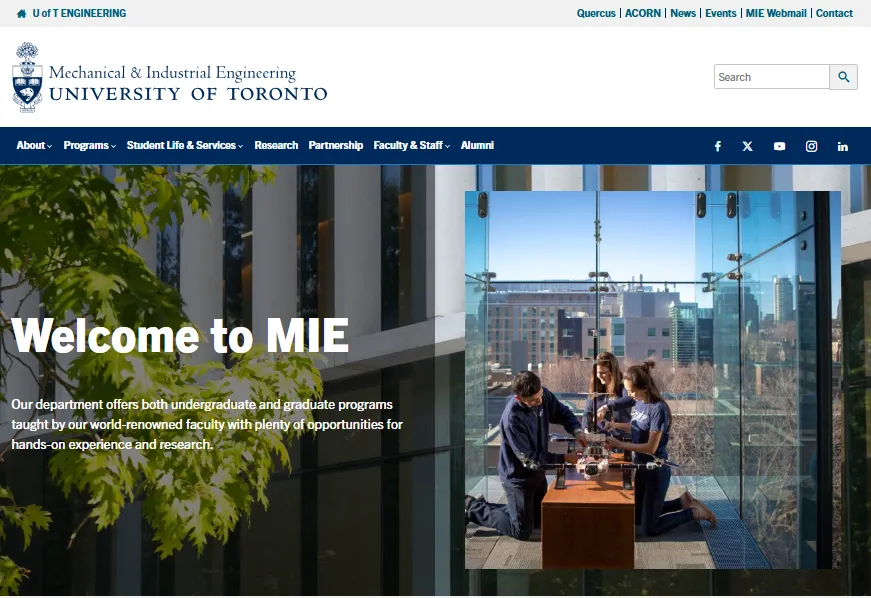
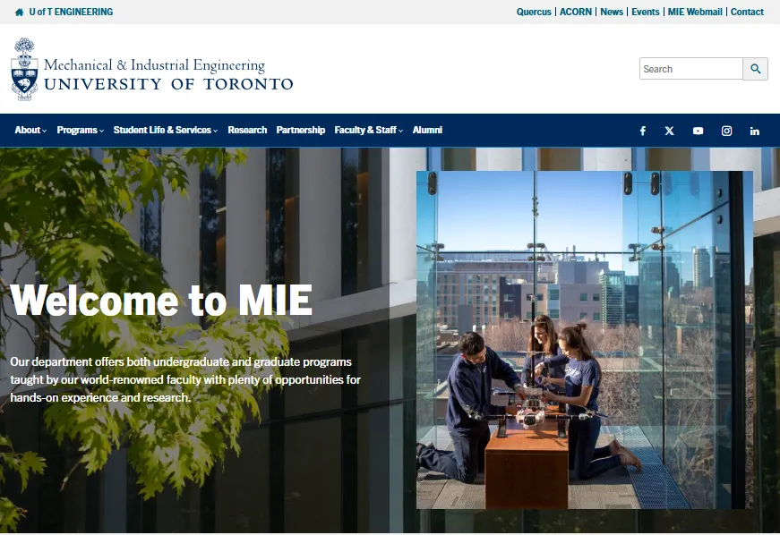
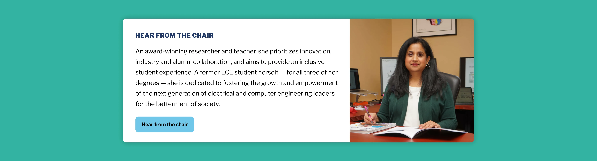
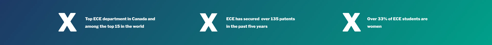
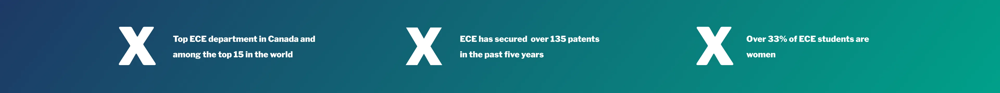
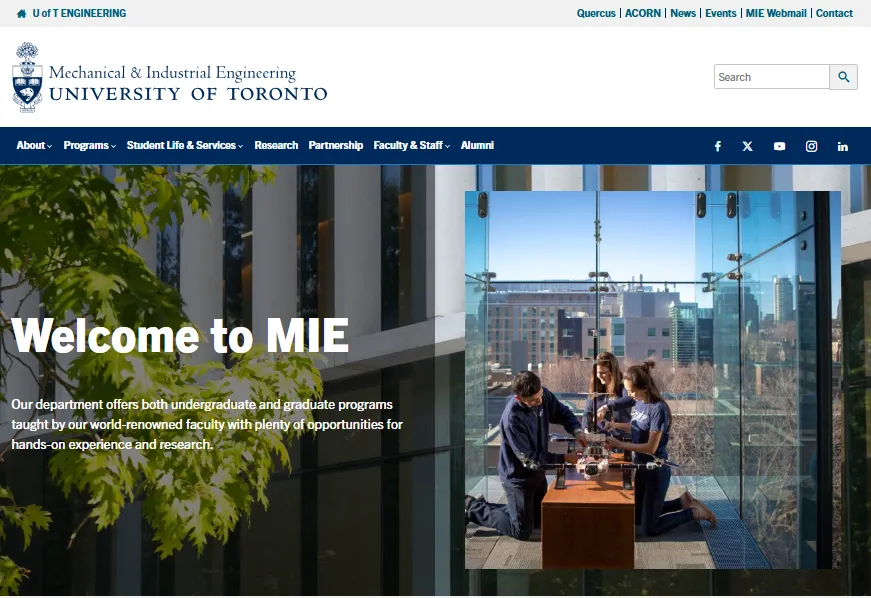
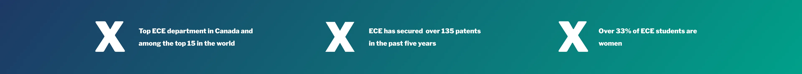

Domain
Education
Role
UX/UI and Front End
Duration
Jan – Mar 2025
Deliverables
Mockups + WordPress Dev
Tools
Figma, WordPress
Project Context
The Electrical & Computer Engineering (ECE) department at U of T needed to transform their academic homepage into a recruitment tool for prospective students, without losing rigorous compliance to cross-departmental brand standards. The challenge: content wasn’t lacking, but clarity, visual hierarchy, and navigation needed a fundamental rethink. Departmental identity and student-focused storytelling had to be balanced within tight stakeholder constraints.
Goals
1. Reimagine the homepage as a digital ambassador to attract prospective students
2. Improve clarity, navigation, and access to key info
3. Align and Ensure visual design and layout with Faculty of Applied Science & Engineering (FASE) web visual standards as well as the University of Toronto brand guidelines
4. Support a range of stakeholder needs; from students to faculty and industry partners
Before we delve into the case study, here's what the page looked like before I worked on it.
Key Challenges
| Issue | Legacy State | Impact |
|---|---|---|
| Outdated Visuals | Relied on static, non-student-focused images | Weak first impression for prospective students |
| Content Overload | Dense, text-heavy layout | Key info buried, increased cognitive load |
| Poor Navigation | Inconsistent quick-links and CTAs | Users struggled to find programs, events, research |
| Inconsistent Branding | Style drift from FASE guidelines | Website felt disjointed from faculty identity |
Design Process
1. Design Audit & Research
Assessed competing FASE faculty sites and leading global engineering portals
Mapped gaps: missing CTAs, unclear section hierarchy, outdated hero imagery
2. Wireframes & Mockups
Built wireframes in Figma to clarify info architecture and streamline page structure
Visual hierarchy focused on what prospective students search for first
3. Stakeholder & Peer Iteration
Presented concepts for department leadership and student ambassadors
Iterated based on feedback from academic admin, researchers, and staff
4. WordPress Development
Handled front-end implementation, ensuring responsive, fast-loading, and modular section design
Deployed content and built reusable components for future campaign pivots
Existing Hero Banner Practices

 

UI Element Ideation

.webp)
 





Final Design Concept
| Problem Area | Redesign Move | Outcome |
|---|---|---|
| Hero Banner | Crafted bold, human-centric banner using ECE’s slogan and real department visuals | Immediate engagement and identity clarity |
| Quick Links | Created visually grouped, mobile-friendly calls to action | Reduced confusion, accelerated task completion |
| Programs/Events | Prioritized with modular cards, stats, and visual blocks | Prospects can quickly compare offerings & see “what's happening” |
| Research & Co‑op | Added spotlight cards and up-to-date stats | Students/partners see clear value and opportunity |
| Visual/Brand | Applied FASE color, grid, and typography standards throughout | Consistent, trust-building look & feel |
Before Redesign versus After Web Redesign and Development
| Legacy Homepage | Redesigned Homepage |
|---|---|
| Generic hero image, academic jargon headlines | Inviting banner and department slogan |
| Long paragraphs, minimal visual breaks | Short blurbs, visual dividers, section cards |
| Small/unreadable quick links in dense lists | Large, color-coded buttons and links to most-visited content |
| Limited research/co-op visibility | Stats, stories, and highlights up front |
| Inconsistent layout on mobile | Fully responsive with modular blocks |
What I Learned
The ECE Homepage Redesign turned a dense academic site into a clear, student‑focused recruitment tool. Guided by research, competitive benchmarking, and stakeholder input, the final design improves navigation, aligns with faculty branding, and highlights programs and events in just a few scrolls. The result is a responsive, modular homepage that strengthens trust, reflects departmental excellence, and supports future recruitment efforts.
Key Takeaway: Structure drives trust
Reframing an academic homepage isn’t just about better visuals; it’s about architecting the journey for all your users.